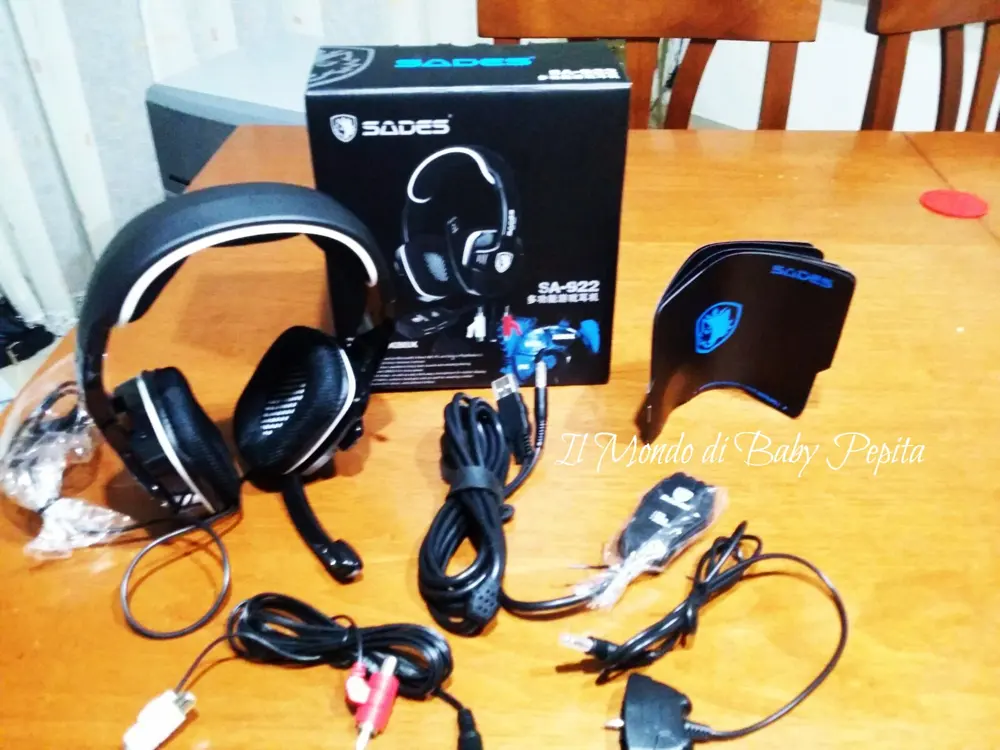
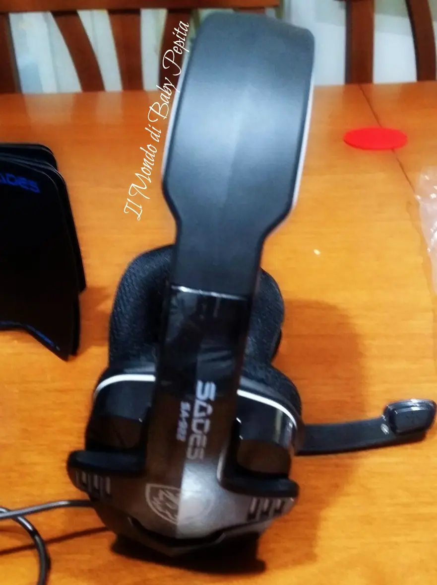
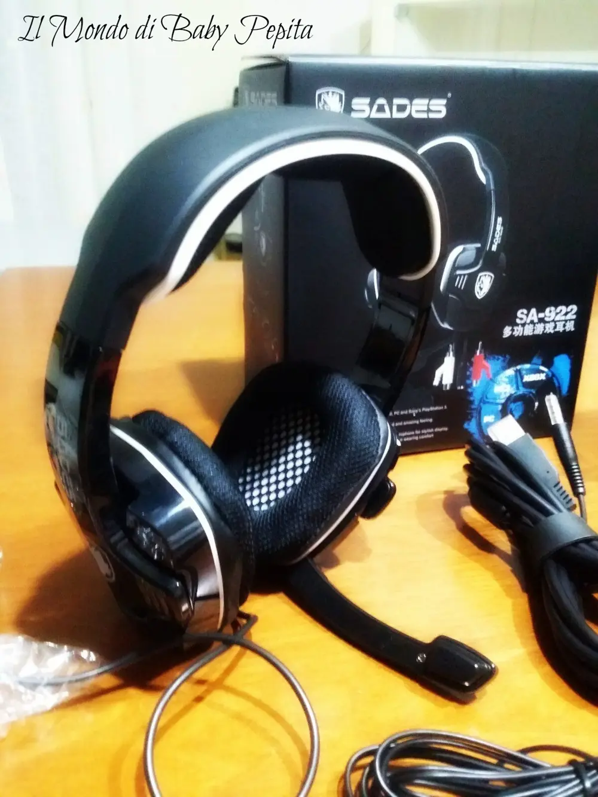

GAMING WORLD - Cuffie Stereo Surround con Microfono
HOLA BABYYYYY
Come va? oggi voglio parlarvi di un'articolo che sicuramente serve un pò a tutti quelli che usano pc, xbox, playstation, ipad, tablet, smartphone e pc portatili . .Quindi un pò tutti ormai. .

Il venditore GAMING WORLD di AMAZON mi ha inviato le cuffie stereo surround con microfono integrato. Marca delle cuffie SADES un punto di riferimento nel mondo delle periferiche da gioco. L'azienda è completamente focalizzate nel regalare ai suoi clienti gli standard di qualità più alti e professionali nel mondo del gaming.
SCHEDA TECNICA:1.Diametro dell'autoparlante: 40mm.2.Lunghezza del cavo delle cuffie: circa 1m.3.Effetto Audio: 7.1 simulato3.Frequenza: 20 to 20.000Hz.4.Sensibilità: 111 +/- 3dB at 1kHz. 5.Impedenza: 32 Ohm at 1kHz. 6.Potenza in Input: 30mW (Max).7.Diametro del Mic: 6.0*5.0mm. 8.Sensibilità del Mic: -54dB+/-3dB.7.Diametro del Mic: 4.0*1.5mm. 8.Frequenza del Mic: 50-10KHz.9.Impedenza del Mic: minore di 2.2K Ohm.10.Lunghezza Cavo USB: 2.2m circa. 11.Lunghezza connettore RCA: 1.6m

La scatola contiene unicamente le cuffie, ma appena indossate si percepisce immediatamente la grande qualità e attenzione nella progettazione e realizzazione.I cuscini auricolari sono molto morbidi e piacevoli da indossare, il suono è completo in ogni sfumatura soprattutto grazie al driver da 40 mm e il microfono che ha un design perfetto e consente un comodo posizionamento verticale in caso di inutilizzo, restituisce una riproduzione vocale coerente senza distorsioni.Il cavo è lungo circa 2,20 metri ed il microfono ha una libertà di movimento in rotazione di 120 gradi.

Design molto aggressivo e futuristico, suono ottimo e buona solidità fanno si che questo prodotto sia consigliatissimo per i gamers di tutte le età che stanno cercando un buon compromesso con la qualità senza spendere una fortuna.

 Insomma cuffie dal design futuristico. In definitiva molto consigliate, ottimo rapporto qualità prezzo. Sono perfette e vanno bene anche per il PC,spedizione veloce anche prima del previsto.Consigliate!
Insomma cuffie dal design futuristico. In definitiva molto consigliate, ottimo rapporto qualità prezzo. Sono perfette e vanno bene anche per il PC,spedizione veloce anche prima del previsto.Consigliate!